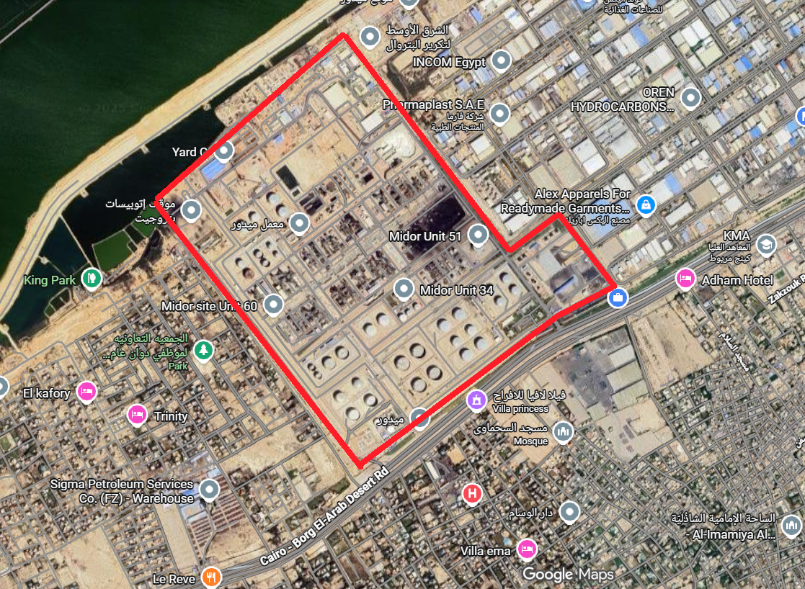

Organizational GHG Inventory
Operational Control Approach
ISO 14064-1:2018 | GHG Protocol Corporate Standard
Overview of MIDOR's 2024 GHG inventory, total emissions, and key findings
Site overview, process units, and refinery complexes
GHG accounting principles, responsible party statement, governance structure
Stationary combustion, process emissions, fugitives, mobile sources
Purchased electricity, employee commuting, use of sold products
Pathway to 2030: Strategic initiatives and reduction targets
Organizational and operational boundaries, scope inclusion
GHG gases, global warming potentials, emission factors
Carbon intensity metrics, future trend analysis framework
Base year selection rationale, recalculation triggers and process
Quantitative uncertainty estimates, data quality improvement roadmap
Report prepared by, special thanks to instructors and organizing team
MIDOR Refinery is one of Egypt's major petroleum refining facilities, refining more than 46 million barrels of crude oil in 2024 (average ~126,000 BPSD) of crude oil. Located on the Mediterranean coast, the refinery produces a diverse slate of petroleum products including LPG, gasoline, jet fuel, diesel, fuel oil, petroleum coke, and sulfur.
This report represents MIDOR's inaugural comprehensive greenhouse gas inventory for the 2024 reporting period. It was prepared as a post-training course assignment following specialized training on GHG management for climate action. As a responsible corporate citizen and key player in Egypt's energy sector, we recognize our obligation to measure, disclose, and manage our environmental impact.
The refinery complex comprises multiple processing units including crude/vacuum distillation (U_01, U_17), catalytic reforming (U_04 CCR/Platformer), hydrotreating units (U_02/03, U_08, U_18-21), hydrogen production via steam methane reforming (U_09, U_21), delayed coking (U_11), sulfur recovery (U_13, U_22), and comprehensive utilities and storage infrastructure.
This report covers MIDOR's operations under the operational control consolidation approach, including all facilities within the refinery fence line. Our first year inventory quantifies emissions across:
Significance Criteria for Indirect Emissions (ISO 14064-1 §9.3e):
Following GHG Protocol guidelines, we calculated emissions for Scopes 1, 2, and selected Scope 3 categories using a significance analysis. Future inventories may expand Scope 3 coverage based on materiality assessments and data availability improvements.
Biogenic CO₂ & GHG Removals (ISO 14064-1 §9.3g-i):
Biogenic CO₂: No biomass fuels are combusted within the organizational boundary. Biogenic CO₂ emissions and removals are therefore zero for the 2024 reporting period.
Direct GHG Removals: MIDOR owns and operates no GHG removal projects or sinks (e.g., CCUS, forests, soil carbon). No direct GHG removals are included in this inventory.
All collected and analyzed data follows the GHG Protocol Corporate Standard and ISO 14064-1:2018 guidelines. Emission factors are sourced from IPCC AR6 (2021), DEFRA 2024, API Compendium, US EPA, and site-specific measurements where available. Some emission factors are calculated using site-specific data (Tier 3 methodology).
Methodology Changes (ISO 14064-1 §9.3n):
This is the first GHG inventory year for MIDOR Refinery. Therefore, no changes in quantification approaches relative to previous reports are applicable. Future inventories will document any methodology changes following the established recalculation policy.
Scope 2 Reporting Method:
Scope 2 emissions are reported using the location-based method, applying the Egyptian national grid emission factor (0.559 kg CO₂e/kWh for 2024) to all purchased electricity from MIDELEC and the National Grid.
GHG Offsets & Renewable Energy Claims:
No GHG offsets, carbon credits, renewable energy certificates (RECs), or similar instruments are claimed in this inventory. All emissions reported are gross values without any offset deductions. Any future offset purchases will be reported separately and not netted out of Scope 1/2 totals, in accordance with GHG Protocol guidance.
Gases Quantified: Our inventory covers carbon dioxide (CO₂), methane (CH₄), and nitrous oxide (N₂O), with all emissions expressed as CO₂ equivalent using global warming potentials from IPCC's Sixth Assessment Report (AR6, 100-year horizon).
| Gas | GWP (AR6) | Primary Sources |
|---|---|---|
| CO₂ | 1 | Combustion, processes |
| CH₄ | 27.9 | Fugitives, wastewater |
| N₂O | 273 | Combustion, wastewater |
A base year has not been selected yet for our GHG emissions because the refinery is currently in a state of significant change. Major revamp projects and unstable operations mean our current energy use and emissions data are unusually high and unpredictable. Using this abnormal period as a baseline would give an inaccurate picture of our performance. Therefore, we will select a base year only after the revamps are complete and the refinery has returned to stable, normal operations.
MIDOR Refinery geographical footprint and site layout
| Product | Markets |
|---|---|
| LPG | Domestic & Regional |
| Gasoline | Domestic |
| Jet Fuel/Kerosene | Exported |
| Diesel (ULSD) | Domestic (portion exported) |
| Fuel Oil | Industrial/Marine |
| Petroleum Coke | Industrial |
| Sulfur | Industrial/Fertilizer |
| Asphalt | Domestic |
MIDOR processes approximately 160,000 BPSD of crude oil, equivalent to ~2.92 million tons annually. The refinery configuration includes deep conversion units (delayed coker) enabling high-value product yields.
Energy requirements are met through refinery fuel gas (RFG) produced internally, supplemented by fuel oil and diesel where needed. Electricity is sourced primarily from MIDELEC with National Grid backup.
The site operates 365 days per year with planned maintenance turnarounds typically every 4-5 years. Process control is managed via distributed control system (DCS) with PI data historian for continuous monitoring.
MIDOR Refinery management is the responsible party for this GHG inventory and its underlying emissions statement. This responsibility includes ensuring the accuracy, completeness, and transparency of reported emissions data; implementing and maintaining appropriate quantification methodologies; and approving the final inventory report for disclosure. The inventory has been prepared under the authority of MIDOR's executive leadership and HSE Department.
| Role | Responsibility |
|---|---|
| Inventory Manager | Overall coordination, compilation, reporting |
| Process Engineers | Activity data collection from units |
| Laboratory | Fuel composition analysis (GC, calorific) |
| Maintenance | Refrigerant tracking, LDAR program |
| Procurement | Electricity invoices, fuel purchases |
| HSE Department | QA/QC, regulatory compliance |
| Management | Review, targets, approval, disclosure |
| Category | Emissions (tCO₂e) | % of Scope 1 |
|---|---|---|
| Stationary Combustion | 2,608,831 | 92.7% |
| Process Emissions | 200,520 | 7.1% |
| Fugitive Emissions | 3,277 | 0.1% |
| Mobile Combustion | 690 | 0.02% |
| TOTAL SCOPE 1 | 2,813,318 | 100% |
| Supplier | Consumption (MWh) | Emissions (tCO₂e) | % |
|---|---|---|---|
| MIDELEC | 363,636 | 200,000 | 80% |
| National Grid | 83,333 | 50,000 | 20% |
MIDOR consumes approximately 447 GWh annually of purchased electricity, primarily sourced from MIDELEC with National Grid serving as backup. The electricity intensity is 153 MWh per kiloton of crude processed, a key metric for tracking energy efficiency improvements.
Scope 3 Category Completeness:
Only Scope 3 Categories 7 (Employee Commuting) and 11 (Use of Sold Products) are quantified in this inventory. Other categories (1-6, 8-10, 12-15) are excluded due to data availability constraints. This exclusion approach follows GHG Protocol guidance requiring disclosure and justification of exclusions.
| Product | Emissions (tCO₂e) | % of Cat. 11 |
|---|---|---|
| Diesel/Gasoil | 12,239,500 | 35.0% |
| Gasoline | 10,491,000 | 30.0% |
| Jet Fuel/Kerosene | 5,245,500 | 15.0% |
| Fuel Oil | 3,497,000 | 10.0% |
| LPG | 2,797,600 | 8.0% |
| Petroleum Coke | 699,400 | 2.0% |
Category 11 emissions represent the combustion of refined products sold by MIDOR and consumed by end users. This is inherent to the refining business model and represents the largest share of our total inventory. Diesel and gasoline together account for 65% of product-use emissions.
Implement certified EMS to systematically monitor and optimize energy consumption. Establish baseline and identify 5-10% savings opportunities.
Optimize combustion efficiency for U_37 boiler complex (largest emitter: 190,000 tCO₂e/year). Target 3-5% fuel savings through air/fuel ratio control. Impact: ~7,000 tCO₂e/year reduction
Install flare gas recovery compressor and fuel gas header integration to capture and reuse flared hydrocarbons. Target 40-50% flare reduction. Impact: ~4,000 tCO₂e/year reduction
Deploy APC on critical units (CDU, VDU, hydrotreaters) for real-time optimization of yields, energy consumption, and operating stability. Target 2-3% efficiency improvement. Impact: ~12,000 tCO₂e/year reduction
Enhanced leak detection program targeting current 3,277 tCO₂e fugitive emissions. OGI cameras, quarterly surveys, rapid repair protocols. Impact: ~1,000 tCO₂e/year reduction
Install rooftop solar panels on administrative buildings and warehouses (500-1,000 kW capacity). Evaluate feasibility for larger-scale deployment. Impact: ~800 tCO₂e/year reduction
Beyond 2030, MIDOR will explore hydrogen fuel transition, carbon capture (CCUS), renewable PPAs, circular economy initiatives, and AI-driven process optimization.
| Category | Sources | Status |
|---|---|---|
| Stationary Combustion | Heaters, boilers, incinerators | ✓ |
| Flaring | Continuous and emergency flare | ✓ |
| Process Emissions | H₂ prod, catalyst regen, SRU | ✓ |
| Fugitive | Tanks, loading, wastewater, refrigerants | ✓ |
| Mobile Combustion | On-site vehicles (diesel) | ✓ |
| Purchased Electricity | MIDELEC + National Grid | ✓ |
| Scope 3 Cat. 7 | Employee commuting | ✓ |
| Scope 3 Cat. 11 | Use of sold products | ✓ |
| Gas | Formula | GWP (AR6) | Sources |
|---|---|---|---|
| CO₂ | CO₂ | 1 | Combustion, processes |
| Methane | CH₄ | 27.9 | Combustion, fugitives |
| Nitrous Oxide | N₂O | 273 | Combustion, wastewater |
| HFCs | Various | 100s-1000s | Refrigerants |
| Source | Method | Data Source | EF Reference |
|---|---|---|---|
| Fuel Gas | Carbon balance | DCS + GC | Site-specific |
| Fuel Oil/Diesel | Consumption × EF | Invoices | API/IPCC |
| Flaring | Flow + DRE | Flow meter | EPA AP-42 |
| H₂ Production | Mass balance | H₂ meter | Stoichiometry |
| Tanks | EPA TANKS | Throughput | EPA/API |
| Loading | AP-42 factors | Volumes | EPA AP-42 |
| Wastewater | IPCC guidelines | COD/BOD | IPCC 2006 |
| Refrigerants | Mass balance | Maintenance logs | AR6 GWPs |
| Electricity | Consumption × Grid EF | Invoices | Supplier/Grid avg |
| Sold Products | Sales × Combustion EF | Sales data | IPCC/EPA |
| Source | EF Value | Unit | Status |
|---|---|---|---|
| Fuel Gas CO₂ | Site-specific | kg/Nm³ | TO BE MEASURED |
| Diesel CO₂ | 74.1 | kg/GJ | ✓ IPCC |
| MIDELEC Grid | 0.55 | tCO₂e/MWh | PLACEHOLDER |
| Gasoline (use) | 69.3 | kg/GJ | ✓ IPCC |
As MIDOR develops a time-series dataset (2025, 2026, 2027...), the following trend analyses will be included:
Year-over-year, MIDOR will refine data collection methods, reduce uncertainties, and expand monitoring coverage (real-time flare meters, LDAR programs, CEMS).
Once operations stabilize, MIDOR will select a base year that represents typical operational performance, has complete data coverage, and can serve as a meaningful comparison point for tracking emissions reduction progress.
The following policy will apply once MIDOR selects a base year:
| Trigger | Description | Threshold |
|---|---|---|
| Structural Change | Merger, acquisition, divestiture, closure | >5% |
| Boundary Change | Change in control, facility add/removal | >5% |
| Method Change | Updated EFs, improved measurement | >5% |
| Data Error | Significant error discovered in base year | >5% |
| Policy Update | New GWPs, regulatory requirement | As required |
| Category | Emissions (tCO₂e) | Uncertainty (±%) | Lower (95% CI) | Upper (95% CI) |
|---|---|---|---|---|
| Stationary Combustion | 2,608,831 | ±2.5% | 2,543,610 | 2,674,052 |
| Process Emissions | 200,520 | ±5.0% | 190,494 | 210,546 |
| Fugitive Emissions | 3,277 | ±25% | 2,458 | 4,096 |
| Mobile Combustion | 690 | ±10% | 621 | 759 |
| Scope 1 TOTAL | 2,813,318 | ±2.66% | 2,738,469 | 2,888,167 |
| Scope 2 Electricity | 199,898 | ±11.18% | 177,540 | 222,256 |
| Scope 3 Cat. 7+11 | 16,926,521 | ±16.68% | 14,104,098 | 19,748,944 |
| TOTAL INVENTORY | 19,939,737 | ±14.17% | 17,112,295 | 22,767,179 |
Uncertainty calculated using error propagation methodology per IPCC guidelines. Combined uncertainties calculated as √(σ²_AD + σ²_EF) for each activity.
Based on the estimated uncertainty ranges using IPCC propagation methods (95% confidence interval):
Main uncertainty drivers: Scope 3 use-phase emissions (±16.68% due to product mix assumptions), grid emission factors (±11.18%), and fugitive emissions estimation (±25% due to measurement limitations). Scope 1 stationary combustion has lowest uncertainty (±2.5%) due to site-specific fuel gas composition analysis and continuous DCS metering.
| Priority | Action | Target | Impact |
|---|---|---|---|
| High | Increase fuel gas GC frequency | Stationary | ±8% → ±5% |
| High | Install/calibrate flare meters | Flaring | Replace estimation |
| High | LDAR program with OGI | Fugitives | ±25% → ±15% |
| Medium | TANKS modeling (EPA) | Tank fugitives | Site-specific EFs |
| Medium | Refrigerant tracking system | HFC leaks | Accurate mass balance |
| Low | Wastewater CH₄ measurement | Wastewater | Replace IPCC defaults |
| High | Obtain supplier-specific grid EFs | Scope 2 | Replace placeholders |
We express our profound gratitude and sincere appreciation to all the lecturers, engineers, and the dedicated team whose invaluable efforts and expertise made the comprehensive course on Greenhouse Gas (GHG) management a resounding success.
We are also deeply thankful to the entire organizing team for the seamless coordination of both the in-person sessions in Alexandria and the online segments. Your collective commitment to advancing knowledge in carbon footprint accounting, international standards, and climate change mechanisms has been truly inspiring and immensely beneficial.
Amr Abo-Mady
G. Ass. Manager
Technology & Development
EPROM
Ahmed Sabri
Dept. Manager
Ahmed Mabrouk
Dept. Manager
Tarek Mohammed
Engineer
Maintenance Planning
API: American Petroleum Institute
AR6: IPCC Sixth Assessment Report (2021)
BPSD: Barrels Per Stream Day
CCR: Continuous Catalyst Regeneration
CEMS: Continuous Emissions Monitoring System
CH₄: Methane
CO₂: Carbon Dioxide
CO₂e: Carbon Dioxide Equivalent
DCS: Distributed Control System
DEFRA: UK Dept for Environment, Food & Rural Affairs
DRE: Destruction and Removal Efficiency
EF: Emission Factor
EPA: U.S. Environmental Protection Agency
GC: Gas Chromatography
GHG: Greenhouse Gas
GJ: Gigajoule
GWP: Global Warming Potential
HFC: Hydrofluorocarbon
IPCC: Intergovernmental Panel on Climate Change
ISO 14064-1: GHG inventory standard
ISO 14069: GHG guidance standard
kton: Kiloton (1,000 metric tons)
LDAR: Leak Detection and Repair
LHV: Lower Heating Value
LPG: Liquefied Petroleum Gas
Mt: Million metric tons (Megatons)
MWh: Megawatt-hour
N₂O: Nitrous Oxide
OGI: Optical Gas Imaging
PI: OSIsoft PI System
PPA: Power Purchase Agreement
QA/QC: Quality Assurance/Quality Control
Scope 1: Direct GHG emissions
Scope 2: Indirect emissions from purchased energy
Scope 3: Other indirect value chain emissions
SMR: Steam Methane Reforming
SRU: Sulfur Recovery Unit
tCO₂e: Metric tons CO₂ equivalent
ULSD: Ultra-Low Sulfur Diesel
| Source | EF | Unit | Reference | Status |
|---|---|---|---|---|
| Fuel Gas CO₂ | Site-specific | kg/Nm³ | Lab GC | TO BE MEASURED |
| Fuel Gas CH₄ | 0.00001 | kg/Nm³ | API | DEFAULT |
| Fuel Gas N₂O | 0.0000001 | kg/Nm³ | IPCC 2006 | DEFAULT |
| Fuel Oil CO₂ | 77.4 | kg/GJ | IPCC 2006 | DEFAULT |
| Diesel CO₂ | 74.1 | kg/GJ | IPCC 2006 | ✓ IPCC |
| Natural Gas CO₂ | 56.1 | kg/GJ | IPCC 2006 | ✓ IPCC |
| Gasoline (use) | 69.3 | kg/GJ | IPCC 2006 | ✓ IPCC |
| Diesel (use) | 74.1 | kg/GJ | IPCC 2006 | ✓ IPCC |
| Jet Fuel (use) | 71.5 | kg/GJ | IPCC 2006 | ✓ IPCC |
| LPG (use) | 63.1 | kg/GJ | IPCC 2006 | ✓ IPCC |
| Pet Coke (use) | 97.5 | kg/GJ | IPCC 2006 | ✓ IPCC |
Cross-reference between emission activities (from MIDOR activities.xlsx) and quantification methods applied.
| Activity | Sub-Activity | Method | Data Source | Classification |
|---|---|---|---|---|
| Heaters/boilers fuel gas | U_01 heater | Carbon mass balance | DCS + GC | Stationary Combustion |
| Heaters/boilers fuel gas | U_17 heater | Carbon mass balance | DCS + GC | Stationary Combustion |
| Incinerator | U_13 firing | Carbon mass balance | DCS + GC | Stationary Combustion |
| Flare | Header reading | Flow + DRE 99.9% | Flow meter | Stationary Combustion |
| H₂ production | U_09 | Process mass balance | H₂ meter + NG | Process Emission |
| H₂ production | U_21 | Process mass balance | H₂ meter + NG | Process Emission |
| Catalyst regeneration | U_04 CCR | Coke burn-off calc | Catalyst circulation | Process Emission |
| Storage tanks | Crude tanks | EPA TANKS / API Ch7 | Tank dimensions | Fugitive Emission |
| Storage tanks | LPG tanks | EPA TANKS / API Ch7 | Tank dimensions | Fugitive Emission |
| Wastewater | U_54/55 | IPCC wastewater method | Flow, COD/BOD | Fugitive Emission |
| Refrigerants | All AC units | Mass balance | Maintenance logs | Fugitive Emission |
| Mobile diesel | Forklifts | Consumption × EF | Fuel receipts | Mobile Combustion |
| Electricity | MIDELEC | MWh × Grid EF | Invoices | Scope 2 |
| Electricity | National Grid | MWh × Grid EF | Invoices | Scope 2 |
| Employee commute | - | Distance × Mode EF | Admin data (Ayman) | Scope 3 Cat. 7 |
| Sold products | Gasoline | Sales × Use EF | Commercial data | Scope 3 Cat. 11 |
| Sold products | Diesel | Sales × Use EF | Commercial data | Scope 3 Cat. 11 |
⚠️ Complete mapping includes all 48 activities from MIDOR activities.xlsx. Any activity classified as "pending" requires method assignment before final calculation.
| Data Type | Source System | Responsible Party | Frequency |
|---|---|---|---|
| Fuel gas flow rates | DCS / PI Historian | Process Engineers | Continuous |
| Fuel gas composition | Laboratory GC | Laboratory | Weekly (min) |
| Fuel oil/diesel | Tank levels + invoices | Procurement | Monthly |
| Electricity | Utility invoices | Procurement | Monthly |
| Product sales | Scheduling Dept invoices | Scheduling Dept | Monthly |
| Flare gas flow | Flare header meter | Process Engineers | Continuous |
| Refrigerant inventory | Maintenance logs | Maintenance | Quarterly |
| Mobile fuel | Vehicle logs | Fleet Manager | Monthly |
All supporting documentation archived for minimum 7 years:
MIDOR has chosen not to pursue third-party verification at this time. Internal quality assurance includes peer review, calculation checks, and data validation processes.
If future verification is required, this inventory framework is structured to support ISO 14064-3 verification processes including limited or reasonable assurance engagements with ISO 14065 accredited bodies.
This GHG inventory is a self-declared, unverified assertion compiled in accordance with ISO 14064-1:2018 and GHG Protocol standards. All emissions data have been calculated internally using approved methodologies and quality-assured through internal peer review processes.
MIDOR has chosen not to pursue third-party verification at this time. If external assurance is required in the future for regulatory compliance or stakeholder requirements, this framework provides a robust foundation for verification under ISO 14064-3.
ISO 14064-1:2018 Clause 9.3.1 specifies mandatory content for GHG inventory reports (items a-t). This cross-reference table demonstrates how the MIDOR inventory addresses each requirement, facilitating verification and audit processes.
| Clause | ISO 14064-1:2018 Requirement | Location in Report | Notes / Key Content |
|---|---|---|---|
| 9.3(a) | Description of the reporting organization | Section 02.01 Background, Section 03 MIDOR at a Glance | 160,000 BPSD refinery, Mediterranean coast, major products, process units |
| 9.3(b) | Responsible party for the GHG statement | Section 04 Principles & Governance - Responsible Party Statement | MIDOR Refinery management identified as responsible party |
| 9.3(c) | Reporting period | Executive Summary, Section 02.01, Cover page | January 1 - December 31, 2024 |
| 9.3(d) | Organizational boundaries | Executive Summary, Section 02.02 Boundaries | Operational control approach; refinery fence line |
| 9.3(e) | Reporting boundaries & significance criteria | Section 02.02 Boundaries - Significance Criteria callout box | ≥1% threshold, ≥95% coverage target; Scope 3 Cat 7 & 11 included |
| 9.3(f) | Direct GHG emissions quantified by gas (CO₂, CH₄, N₂O, etc.) in tCO₂e | Section 03 Scope 1 - "Emissions by GHG Gas" table | CO₂: 1,746,000 t (97%), CH₄: 1,613 t (2.5%), N₂O: 33 t (0.5%) |
| 9.3(g) | Biogenic CO₂ emissions and removals quantified separately | Section 02.02 Boundaries - Biogenic CO₂ & GHG Removals callout | Zero biogenic CO₂ (no biomass fuels) |
| 9.3(h) | Quantified direct GHG removals | Section 02.02 Boundaries - Biogenic CO₂ & GHG Removals callout | Zero removals (no CCUS, forests, or sinks) |
| 9.3(i) | Explanation of excluded GHG sources/sinks | Section 02.02 Boundaries, Scope 3 categories table | Scope 3 cats 1-6, 8-10, 12-15 excluded with justification |
| 9.3(j) | Quantified indirect GHG emissions (by category) in tCO₂e | Scope 2 & 3 section, detailed tables | Scope 2: 199,898 tCO₂e (electricity); Scope 3: 16,926,521 tCO₂e |
| 9.3(k) | Base year & base year inventory | Section 02.04 Base Year, Executive Summary | No base year selected; 2024 is reporting year only (unstable operations during revamps) |
| 9.3(l) | Base year recalculation & comparability limitations | Section 02.04 Base Year | 5% materiality threshold defined; no base year established yet |
| 9.3(m) | Description of quantification approaches and rationale | Section 02.03 Methodology, Appendix B Equations, Appendix C Activity Mapping | IPCC methods, carbon mass balance, API fugitives, GHG Protocol Scope 3 |
| 9.3(n) | Changes in quantification approaches vs. previous period | Section 02.03 Methodology - "Methodology Changes" callout | N/A - first inventory year |
| 9.3(o) | Emission/removal factors used with sources | Appendix B: Emission Factor Reference Table, equations | IPCC AR6, API, DEFRA, EPA; site-specific fuel gas composition |
| 9.3(p) | Assessment of uncertainty | Section 09 Uncertainty & Quality - Uncertainty table | Category-level uncertainties: ±2.5% to ±25% |
| 9.3(q) | Impact of uncertainty on accuracy of GHG inventory | Section 09 - "Impact of Uncertainty on Inventory Accuracy" callout | Scope 1: ±2.66%, Scope 2: ±11.18%, Scope 3: ±16.68%, Overall: ±14.17% |
| 9.3(r) | Statement of conformance with ISO 14064-1 | Cover page, Executive Summary, Credits & Standards page | "ISO 14064-1:2018 | GHG Protocol Corporate Standard" |
| 9.3(s) | Disclosure of verification status and assurance level | Executive Summary, Appendix E: Future Assurance | Not yet verified; future ISO 14064-3 limited/reasonable assurance planned |
| 9.3(t) | GWP values and sources | Section 02.03 Methodology - GWP table, Appendix B | IPCC AR6 (2021): CO₂=1, CH₄=27.9, N₂O=273; 100-year horizon |